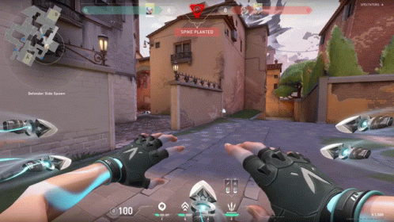

Valorant é um jogo eletrônico multijogador gratuito para jogar de tiro em primeira pessoa desenvolvido e publicado pela Riot Games. É o primeiro jogo do gênero desenvolvido pela empresa, sendo anunciado pela primeira vez com o codinome Project A em outubro de 2019, em um evento de comemoração de 10 anos de League of Legends. Foi lançado em 2 de junho de 2020 para Microsoft Windows.
Jogabilidade
Duas equipes de cinco jogam uma contra a outra, e os jogadores assumem o papel de "agentes" com habilidades únicas. No modo de jogo principal, a equipe atacante tem uma bomba, chamada Spike, que eles precisam plantar em um local. Se a equipe atacante proteger com sucesso a bomba e ela detonar, eles ganharão um ponto. Se a equipe defensora desarmar com sucesso a bomba ou o cronômetro de 100 segundos da rodada expirar, a equipe defensora receberá um ponto. Eliminar todos os membros da equipe adversária também ganha uma rodada. A primeira equipe a vencer o melhor de 24 rodadas vence a partida. O jogo também promove um servidor com tick rate de 128, que garante uma jogabilidade suave e baixo ping com uma expansão global de data centers.

Demonstrativo da jogabilidade de Valorant, dois opontes com a agente "Jett" Usando suas habilidades.
Recepção
Crítica
Valorant foi comparado ao Counter-Strike: Global Offensive da Valve, com ambos os jogos tendo duas equipes de cinco jogadores tentando plantar uma bomba, e ao Overwatch da Blizzard Entertainment, já que ambos os jogos têm várias classes e personagens atendendo a vários estilos de jogo.
Austen Goslin, da Polygon, elogiou o beta de Valorant, descrevendo-o como refinado e "um dos jogos de tiro tático mais divertidos que já joguei". No primeiro dia de seu lançamento beta, o Valorant acumulou o segundo maior número de espectadores simultâneos para qualquer jogo na Twitch, com 1,73 milhão de espectadores sintonizados em dezenas de transmissões. Apenas outro título da Riot Games, League of Legends, teve mais espectadores simultâneos, quando 1,74 milhão assistiram à final do Campeonato Mundial de 2019.
Valorant recebeu críticas por seu sistema de comunicação de voz tóxico e dominado por homens. Emily Rand, da ESPN, falou sobre sua experiência negativa jogando em times que usam a função de comunicação por voz como mulher. Rand "recusa-se terminantemente a usá-lo" quando não está brincando com seus amigos. Jordon Oloman, do The Guardian, explica como "as maçãs podres entre os jogadores de Valorant esperam um nível absurdo de perfeição, e as críticas resultante do bate-papo por voz dificilmente são construtivas"
Foi indicado para Melhor Jogo de Esports, Melhor Multijogador e Melhor Suporte à Comunidade no The Game Awards 2020. Venceu como Melhor Jogo de Esports no The Game Awards 2022
Tabela referente as cirticas do lançamento do jogo
Resenha Crítica
Publicação
Nota
IGN
9/10
GameSpot
7/10
Game Informer
8.5/10
The Guardian
4/5
Jeuxvideo
15/20
Pontuação global
Agregador
Nota Média
Metacritic
80/100
Andamento
Até janeiro de 2022, o jogo apresentava quatro episódios, incluindo 18 agentes (personagens) e 7 mapas.Em termos de jogabilidade, durante a sua experiência nas partidas, é possível adquirir 18 armamentos diferentes. Depois de seu lançamento oficial, três novos modos de jogo foram adicionados, a Disputa de Spike, o Mata-Mata e a Replicação. O jogo conta com uma mecânica de passe de batalha que permite o jogador colecionar até 50 itens através da experiência obtida ao jogar partidas.
O jogo também conta com um ecossistema competitivo, com campeonatos, equipes e jogadores profissionais ao redor do mundo. A Riot Games organiza os principais eventos, que são aderidos a sua turnê global, o Valorant Champions Tour.A desenvolvedora também ajuda a organizar, em parceria com outras empresas, uma série de competições chamada de Valorant Game Changers, que contribui para a inclusão de mulheres e pessoas de gêneros marginalizados ao cenário profissional.
Video do yotube que mostra trailer do jogo Valorant